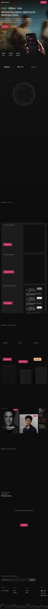
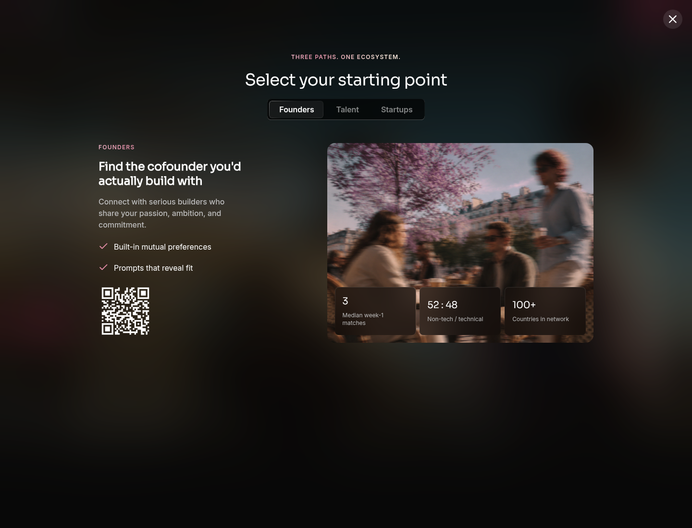
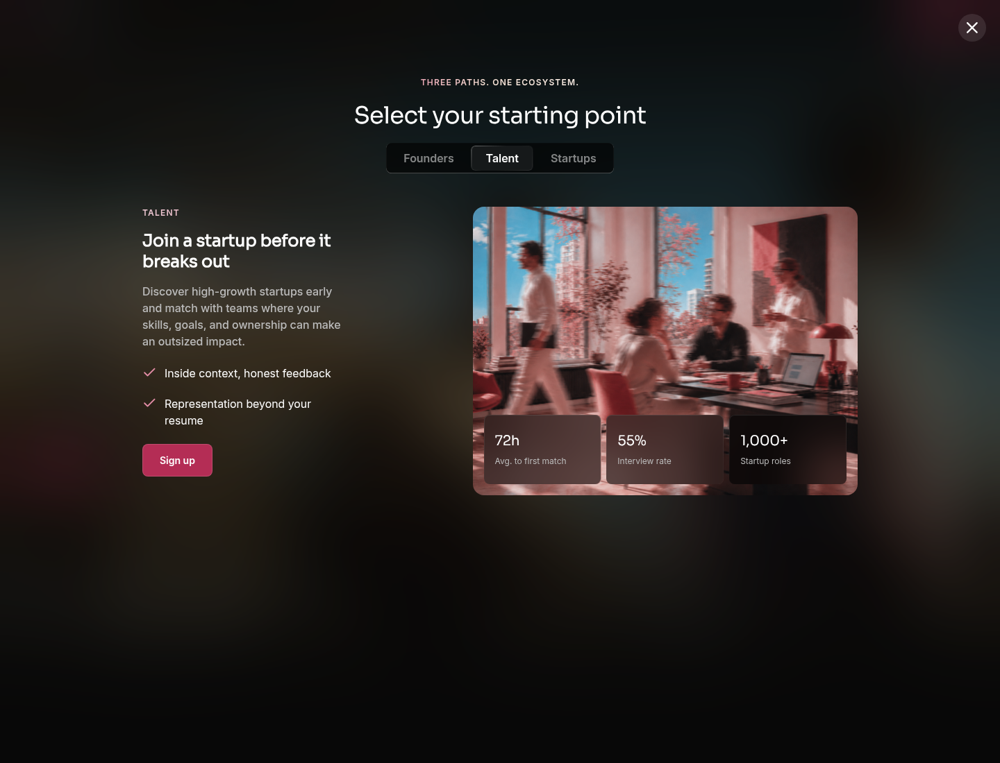
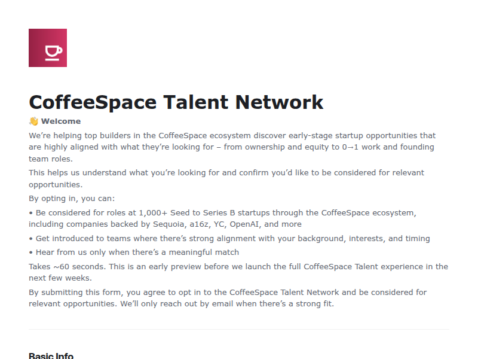
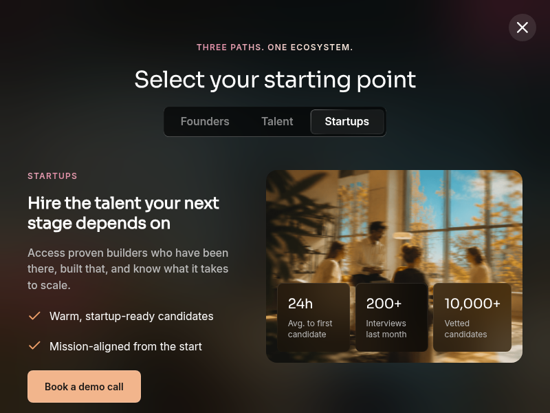
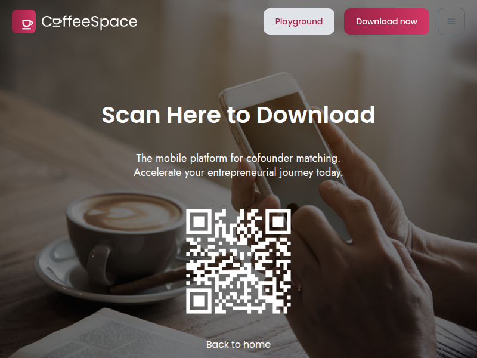

Profile
- Company
- CoffeeSpace
- Url
- https://www.coffeespace.com/
- Source Category
- Direct competitors
- Research Status
- Deep Cited Research / Draft Complete
- Current Status
- live - re-verified 2026-07-19 by direct fetch (HTTP 200, active site, working sign-up flow, TechCrunch Startup Battlefield 200 alum). Confirmed live mobile apps on both App Store and Google Play.
- Founded Launch Year
- Company founded 2021 as 'Counselab' (per Crunchbase/CB Insights); pivoted/rebranded to CoffeeSpace and publicly launched March 2024 (per TechCrunch)
- Company Age
- ~5 years as a company (2021-2026); ~2 years under the CoffeeSpace brand/product
- Hq Country
- US (San Francisco, California)
- Operating Area
- Global for cofounder matching (30K+ users, 100+ countries); talent/startup hiring product currently US-focused only
- Target Users
- Three sides: (1) Founders seeking a cofounder, (2) 'Talent' (engineers/builders/designers) seeking to join an early-stage startup, (3) Startups (Seed-Series B, generally having raised $10M+) hiring high-signal talent
- Product Category
- swipe/card matchmaking; cofounder matching; startup talent/hiring marketplace; AI-based compatibility matching. No founder-investor capital, data room, or NDA/e-sign feature found.
Product Flows
- Swipe Card Interface
- yes
- Mutual Match
- yes
- Ai Matching Scoring
- yes - AI daily recommendations/deeper fit models
- Ai Deck Scoring
- not found / no public source - no pitch-deck or business-plan scoring feature; product is purely people-matching, not capital/deck-focused
- Founder To Founder Flow
- yes - founder/builder matching
- Founder To Investor Flow
- Not applicable - CoffeeSpace has no investor-facing product. The closest equivalent 'third path' is Startups<->Talent (hiring), not Founder<->Investor: startups book a demo call, browse a vetted 10,000+ candidate pool, and interview via a 'Playground' recruiter tool (paid, separate pricing) with a reported 24h average time-to-first-candidate.
- Project Profiles
- yes - profile prompts and startup/talent profiles
- Messaging Collaboration
- yes - matching and chatting are free for builders/founders
- Mobile App
- yes
- Web App
- yes
Security & Documents
- Nda Gated Unlock
- not found / no public source - no NDA-gating step documented in TechCrunch coverage, FAQ, or Proxycurl/Enrich Layer technical case study; chat opens immediately on mutual match (contradicts original automated pass which marked 'yes')
- Data Room
- not found / no public source - no document vault, financials sharing, or data-room feature found anywhere
- E Signature
- not found / no public source - no e-signature feature documented (contradicts original automated pass which marked 'yes'; likely keyword false-positive)
- Meeting Prep Ai Briefing
- not found / no public source
Pricing, Funding & Traction
- Pricing Model
- Freemium: profile creation, matching, and chatting free for founders/talent; premium reported historically at $50/month for expanded matches/filters (per TechCrunch Nov 2024); separate/custom B2B pricing for startup recruiting tools ('Playground')
- Business Model
- Three-sided marketplace: free C2C cofounder/talent matching subsidized by paid B2B recruiting product sold to funded startups (Seed-Series B, $10M+ raised)
- Total Funding
- $500,000 (angel/pre-seed) per Eqvista interview and CB Insights
- Funding Rounds
- One reported angel/pre-seed round; no priced institutional round found
- Investors
- Angel investors, including 'exited founders, YC-backed founders, and angel investors from Google, Meta, and QuantumBlack' per Eqvista interview with CEO Hazim Mohamad; many investors are also platform users
- Funding Source Type
- Angel / pre-seed
- Last Funding Date
- not found / no public source (exact date of the $500K raise not disclosed; company began building product in summer 2023, launched March 2024)
- Users Traction
- Current (2026) homepage: 30,000+ users, 2.5M+ swipes, 65,000+ matches, 100+ countries. TechCrunch (Nov 2024, ~8 months post-launch): 7,000+ users, 270,000+ swipes. Growth trajectory from ~5,600 users at launch (Mar 2024) to 30K+ by 2026.
- Deals Funding Facilitated
- not applicable - no capital-facilitation feature; company instead reports hiring-funnel metrics (55% interview rate for talent, 200+ interviews/month for startups)
- Partnerships
- Selected for TechCrunch Disrupt 2024 Startup Battlefield 200 cohort; technical partnership/case-study relationship with Proxycurl/Enrich Layer for LinkedIn data enrichment
- Media Coverage
- TechCrunch, 'CoffeeSpace is a Hinge-like app that wants to help you find your co-founder' (Nov 2, 2024); Eqvista founder interview; Buzzy Rocket 'Founder Spotlight: Hazim Mohamad'; Enrich Layer/Nubela technical case study
- Product Update Activity
- Active - grew from a single 'cofounder matching' product (Mar 2024) to a three-sided platform (Founders/Talent/Startups) with a dedicated B2B 'Playground' recruiting product by 2026; App Store rating 4.8 suggests sustained active development
- Acquisition Rebrand History
- Formerly known as 'Counselab' (founded 2021); rebranded to CoffeeSpace ahead of its March 2024 relaunch
Scores
- Product Overlap Score
- 4
- Feature Maturity Score
- 4
- Market Traction Score
- 5
- Funding Strength Score
- 2
- Ai Depth Score
- 3
- Nda Security Strength Score
- 1
- Network Moat Score
- 4
- Direct Threat Score
- 3.3
- Source Confidence
- High
Evidence Notes
- Primary Sources
- https://www.coffeespace.com/
https://www.coffeespace.com/download
https://apps.apple.com/us/app/coffeespace-connect-build/id6474048489
https://play.google.com/store/apps/details?id=com.coffeespace.cofoundermatch - Secondary Sources
- https://techcrunch.com/2024/11/02/coffeespace-is-a-hinge-like-app-that-wants-to-help-you-find-your-co-founder/
https://eqvista.com/interview-with-hazim-mohamad-coffespace/
https://www.crunchbase.com/organization/coffeespace
https://www.cbinsights.com/company/coffeespace
https://nubela.co/blog/coffeespace-powers-its-cofounder-matching-app-with-proxycurl/
https://buzzyrocket.com/founder-spotlight-hazim-mohamad/
https://techcrunch.com/startup-battlefield/company/coffeespace/ - Unsupported Claims
- Exact date of $500K raise not disclosed. Current 30K users/2.5M swipes/65K matches are the company's own homepage claims, not independently audited.
- Contradictions
- Original automated pass marked nda_gated_unlock and e_signature as 'yes' and total_funding as 'raised at least $10M' - the '$10M' figure in the original was actually a misread of CoffeeSpace's FAQ describing its *target startup customers* ('Seed to Series B startups that have raised at least $10M'), not CoffeeSpace's own funding. CoffeeSpace itself has raised only ~$500K. Corrected here.
- Last Checked
- 2026-07-19
- Notes
- Strongest traction and clearest three-sided network-moat story in this batch (30K+ users, TechCrunch Disrupt alum), but weakest on the NDA/data-room/collaboration-security dimension that differentiates BizMatch - CoffeeSpace has essentially no security/NDA layer, opening chat immediately on match.
Registration Flow
Research date: 2026-07-19. Screenshots are sanitized public copies from the private registration-flow capture set; credentials, tokens, verification links/codes, browser chrome, and private identifiers are not intentionally published.
Outcome: product/app flow not applicable to browser account registration.
Stop point: Official role-branch gates before native-app onboarding, talent application submission, or startup demo booking
Blocker / boundary: CoffeeSpace does not provide a browser-based self-service account registration flow across its three branches. Founder onboarding requires the mobile app; Talent signup is an application/opt-in form whose submission is outside this evidence-only task; Startups are routed to a demo-call booking flow.
- Official public homepage. CoffeeSpace's official homepage presents a Sign up/Get started route and describes separate matching experiences for founders, talent, and startups.
- Role-based starting-point selector. Get started opens an on-site selector with three branches: Founders, Talent, and Startups. The founder branch shows a QR code to download the mobile app, with no on-page 'Download app' button or signup form.
- Talent signup branch. The Talent branch offers Sign up for early-stage startup opportunities and links to an official CoffeeSpace Talent Network form hosted by Airtable.
- Talent application submission gate. The blank Airtable form states that submission opts the applicant into the CoffeeSpace Talent Network for consideration. It requires identity/contact and career-preference details, including full name, email, LinkedIn URL, job-search status, roles, timeline, work setup, company stage, US work authorization, and target base salary. The form was not filled or submitted.
- Startup sales branch. The Startups branch is not self-service registration; it offers a Book a demo call action through CoffeeSpace's official Cal.com link.
- Founder mobile-app download gate. The founder Download app link resolves to CoffeeSpace's official download page, which presents a QR code and Download now action for the mobile cofounder-matching platform. No browser registration form is available on this branch.





